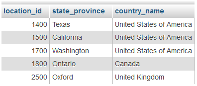
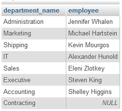
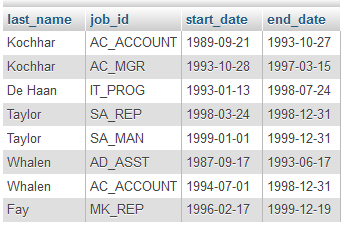
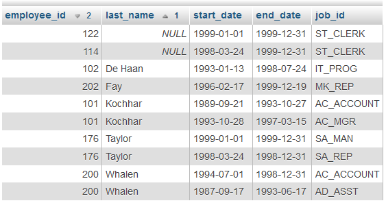
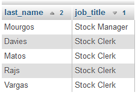
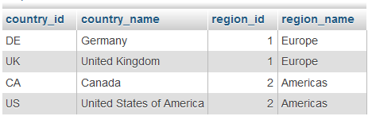
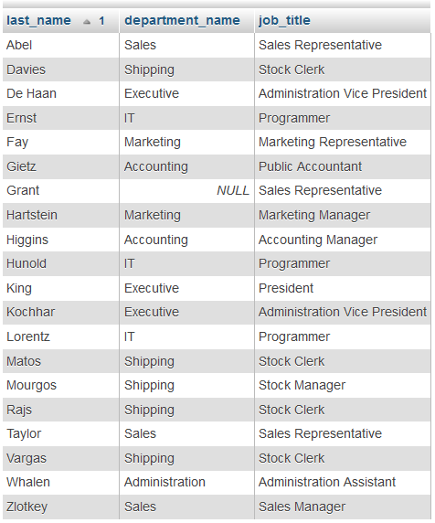
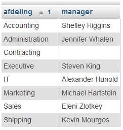
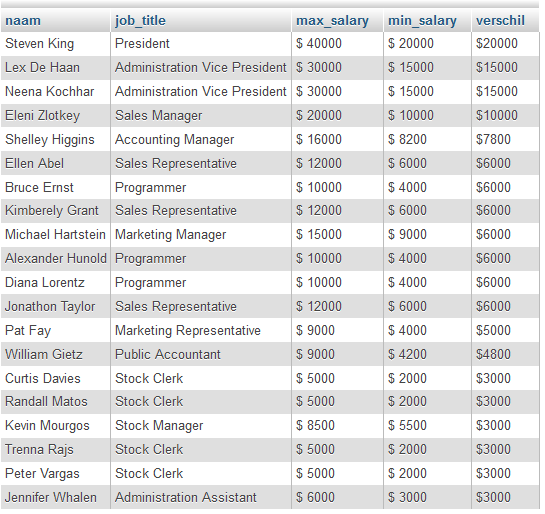
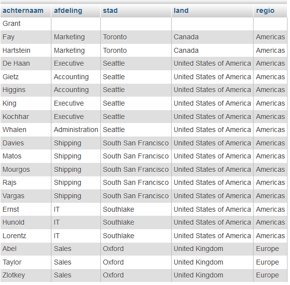

Opdrachten 6#
Opdracht 51
Maak onderstaand overzicht op vier verschillende manieren. Je levert dus vier verschillende query’s in.
Met een NATURAL JOIN.
Met een JOIN USING.
Met een JOIN ON.
Met een EQUI JOIN.

Opdracht 52
Maak een overzicht van de department_names met de managers van die departments zoals hieronder. Contracting heeft geen manager maar die department_name moet er dus ook bij staan. Gebruik aliassen van één letter.

Opdracht 53
Maak onderstaand overzicht na. Het is een overzicht van employees met een job_history. Gebruik e als alias voor employees en h als alias voor job_history.

Opdracht 54
Maak onderstaande query na. De gegevens komen uit de tabellen employees en job_history. Er is gesorteerd op last_name en daarna op employee_id in omgekeerde volgorde. Er zijn twee employee_id’s die niet voorkomen in de tabel employees maar wel in job_history.

Opdracht 55
Maak een overzicht van de employees die werken op de department_name Shipping met hun job_title. Shipping staat in departments. De job_titles staan in jobs en de last_name haal je uit employees. Gebruik aliassen van één letter, bijvoorbeeld e (employees), d (departments) en j (jobs). Let op de sortering.

Opdracht 56
Maak onderstaand overzicht na. De informatie komt uit de tabellen countries en regions. Gebruik in dit geval USING.

Opdracht 57
Maak onderstaande tabel na. De gegevens komen uit employees, departments en jobs. Gebruik de aliassen e, d en j voor de tabellen. Er is gesorteerd op last_name. Let op dat Grant voorkomt in het overzicht!

Opdracht 58
Maak onderstaand overzicht na. Noem elke department_name en daarachter de first_name en last_name aan elkaar van de manager. De department zonder manager (Contracting) moet ook genoemd worden. Er is gesorteerd op department_name.

Opdracht 59
Maak onderstaand overzicht na. De gegevens komen uit de tabellen employees en jobs. Er is gesorteerd op verschil van hoog naar laag en als dat gelijk is op last_name. Met het verschil bedoelen we max_salary - min_salary.

Opdracht 60
Maak onderstaand overzicht. De informatie komt uit vijf verschillende tabellen, namelijk employees, departments, locations, countries en regions. Je moet dus alle vijf tabellen aan elkaar knopen. Er is achtereenvolgens gesorteerd op region_name, country_name, city en last_name. Ook Grant moet voorkomen in het overzicht en er mag geen NULL komen staan bij haar department_name, city, country_name en region_name.
